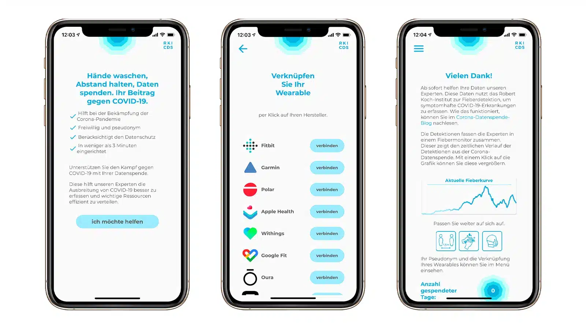
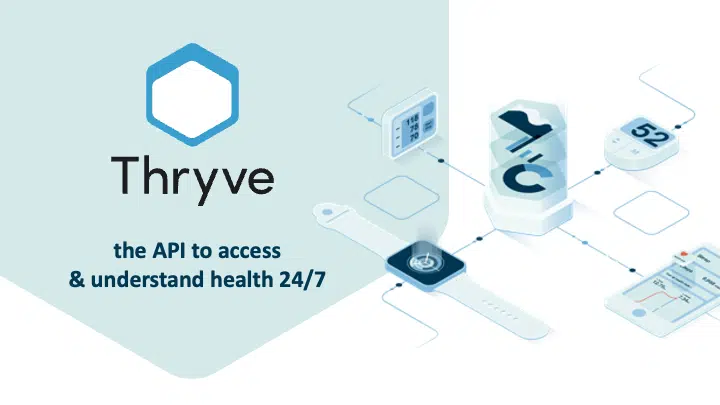

Thryve GmbH
Thryve connects wearables and health apps to a single API, helping companies build health products without the integration headache.
Health Data Platform • Product Owner • Oct 2019 - Dec 2022

Corona Datenspende (RKI)
Germany's first Corona-App for RKI. 500K+ active data donors, launched in 4 weeks, detected second wave 2 weeks early.
German Gov't
500K+ Users

Thryve Health Data API
Unified SDK serving 1M+ users across 100+ health industry customers, simplifying wearable data integration.
API Platform
Health Tech